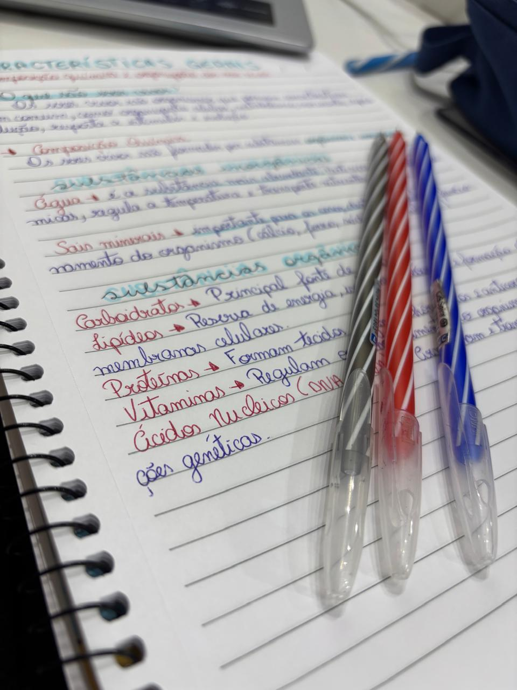

Minha formação
Cada etapa da minha vida acadêmica contribui para a construção da profissional que desejo ser.
Minha trajetória acadêmica
Ao longo da minha vida escolar, venho adquirindo conhecimentos e experiências que contribuem para meu desenvolvimento pessoal e acadêmico.
Atualmente, estou cursando o Ensino Médio integrado ao curso técnico em Desenvolvimento de Sistemas, uma formação que me proporcionou contato com diferentes áreas do conhecimento.

Desenvolvimento de Sistemas
Durante o curso técnico, tive a oportunidade de aprender sobre programação, criação de sites, banco de dados e desenvolvimento de projetos.
Mesmo desejando seguir a área da Medicina, considero essa formação muito importante para minha trajetória. Aprendi sobre organização, responsabilidade, trabalho em equipe e cumprimento de prazos.
São conhecimentos e habilidades que pretendo levar comigo para minha futura vida profissional.
O que venho desenvolvendo?
Organização
Aprendi a organizar tarefas, atividades e projetos.
Trabalho em equipe
Desenvolvi a capacidade de colaborar e compartilhar ideias.
Tecnologia
Conheci ferramentas e recursos que ajudam a solucionar problemas.
Responsabilidade
Aprendi a lidar com compromissos, prazos e desafios.